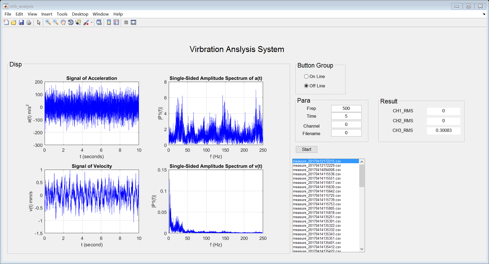

function varargout = virb_analysis(varargin)
gui_Singleton = 1;
gui_State = struct('gui_Name', mfilename, ...
'gui_Singleton', gui_Singleton, ...
'gui_OpeningFcn', @virb_analysis_OpeningFcn, ...
'gui_OutputFcn', @virb_analysis_OutputFcn, ...
'gui_LayoutFcn', [] , ...
'gui_Callback', []);
if nargin && ischar(varargin{1})
gui_State.gui_Callback = str2func(varargin{1});
end
if nargout
[varargout{1:nargout}] = gui_mainfcn(gui_State, varargin{:});
else
gui_mainfcn(gui_State, varargin{:});
end
function virb_analysis_OpeningFcn(hObject, eventdata, handles, varargin)
handles.output = hObject;
if ~exist('Data','dir')
mkdir('Data')
end
set(handles.off_line,'value',1)
set(handles.ch1_norm,'string','0')
set(handles.ch2_norm,'string','0')
dir_info=dir('./measureData');
dircell=struct2cell(dir_info)' ;
filenames=dircell(3:end,1) ;
set(handles.file_list,'string',filenames);
set(handles.file_list,'value',1);
if ~isempty(filenames)
filename=filenames{1};
filepath=fullfile('./measureData',filename);
data=load(filepath);
a_data=data(:,2)';
Fs=500;
color='b';
virb_disp(hObject, eventdata, handles,a_data,Fs,color);
end
axes(handles.a_t)
title('Signal of Acceleration')
xlabel('t (seconds)')
ylabel('a(t) m/s^2')
hold on
grid
axes(handles.a_f)
title('Single-Sided Amplitude Spectrum of a(t)')
xlabel('f (Hz)')
ylabel('|P1(f)|')
hold on
grid
axes(handles.v_t)
title('Signal of Velocity')
xlabel('t (second)')
ylabel('v(t) mm/s')
hold on
grid
axes(handles.v_f)
title('Single-Sided Amplitude Spectrum of v(t)')
xlabel('f (Hz)')
ylabel('|P1(f)|')
hold on
grid
guidata(hObject, handles);
function varargout = virb_analysis_OutputFcn(hObject, eventdata, handles)
varargout{1} = handles.output;
function file_list_Callback(hObject, eventdata, handles)
delete(findobj(handles.a_t,'type','Line'))
delete(findobj(handles.a_f,'type','Line'))
delete(findobj(handles.v_t,'type','Line'))
delete(findobj(handles.v_f,'type','Line'))
value=get(handles.off_line,'value')
if value==1
filenames=get(handles.file_list,'string');
value=get(handles.file_list,'value');
filename=filenames{value};
filepath=fullfile('./measureData',filename);
data=load(filepath);
a_data=data(:,2)';
Fs=500;
color='b';
virb_disp(hObject, eventdata, handles,a_data,Fs,color);
end
function file_list_CreateFcn(hObject, eventdata, handles)
if ispc && isequal(get(hObject,'BackgroundColor'), get(0,'defaultUicontrolBackgroundColor'))
set(hObject,'BackgroundColor','white');
end
function ch1_norm_CreateFcn(hObject, eventdata, handles)
function start_Callback(hObject, eventdata, handles)
value=get(handles.off_line,'value')
if value==1
msgbox('Only can use this button in online mode')
return
end
global tcpipClient
delete(findobj(handles.a_t,'type','Line'))
delete(findobj(handles.a_f,'type','Line'))
delete(findobj(handles.v_t,'type','Line'))
delete(findobj(handles.v_f,'type','Line'))
freq=get(handles.freq,'string');
Fs = str2double(freq);
time=get(handles.time,'string');
channel=get(handles.channel,'string');
Length=Fs *str2double(time);
now=fix(clock);
filename=['SP_',num2str(now(4)),num2str(now(5)),num2str(now(6)),'.txt'];
set(handles.filename,'string',filename)
set(handles.start,'UserData',1);
guidata(hObject, handles);
instruction = ['{"jsonType":3,"freq":',freq,',"userName":"15055305685","productMac":"00:CA:01:0F:00:01","sampleNum":',num2str(Length),',"fileName":"blue","channelList":"',channel,'"}']
fwrite(tcpipClient,instruction,'int8');
disp('Instruction sending succeeds.');
numSent = get(tcpipClient,'valuesSent');
disp(strcat('Bytes of instruction is :',num2str(numSent)));
if isempty(strfind(channel,'0'))
set(handles.ch1_norm,'string','0')
end
if isempty(strfind(channel,'1'))
set(handles.ch2_norm,'string','0')
end
if isempty(strfind(channel,'2'))
set(handles.ch3_norm,'string','0')
end
function off_line_Callback(hObject, eventdata, handles)
value=get(handles.off_line,'value')
function uibuttongroup1_SelectionChangedFcn(hObject, eventdata, handles)
value=get(handles.off_line,'value')
global tcpipClient
if value==0
delete(findobj(handles.a_t,'type','Line'))
delete(findobj(handles.a_f,'type','Line'))
delete(findobj(handles.v_t,'type','Line'))
delete(findobj(handles.v_f,'type','Line'))
N = 2048;
tcpipClient = tcpip('192.168.1.251',3333,...
'NetworkRole','Client');
set(tcpipClient,'OutputBufferSize',8*N);
set(tcpipClient,'InputBufferSize',1024);
set(tcpipClient,'Timeout',60);
fopen(tcpipClient);
dec2int = @(x, bits) mod(x + 2^(bits-1), 2^bits) - 2^(bits-1);
color='rgbk';
h_line=zeros(4,4);
L = 2048;
cmd=[];
x=zeros(4,L);
recv_num=zeros(1,4);
while(get(handles.off_line,'value')==0)
while(strcmp(tcpipClient.Status,'open'))
nBytes = get(tcpipClient,'BytesAvailable');
if nBytes > 0
break;
end
pause(0.001);
end
if nBytes==0
continue;
end
recvRaw = fread(tcpipClient,nBytes,'int8') ;
if get(handles.start,'UserData')==1
cmd=[];
set(handles.start,'UserData',0)
recv_num=zeros(1,4);
guidata(hObject, handles);
end
cmd = [cmd recvRaw'];
idx=find(cmd==0);
while ~isempty(idx)
json_str=cmd(1:idx(1)-1);
cmd=cmd(idx(1)+1:end);
if ~isempty(strfind(char(json_str),'channel_info'))
result=loadjson(char(json_str));
channel_list=result.channelList;
num=result.channel_info.num;
data=result.channel_info.data;
cur_pkg=result.channel_info.cur_package;
total_pkg=result.channel_info.total_package;
hex=str2hex(data);
data_length=size(hex,2)/2;
ad_value=zeros(1,data_length);
filename=get(handles.filename,'string');
fid=fopen(fullfile('Data',filename),'at');
for j=1:data_length
ad_value(j)=hex(2*j-1)*256+hex(2*j);
ad_value(j)=dec2int(ad_value(j),16);
fprintf(fid,'%s\n',num2str(ad_value(j)));
end
fclose(fid);
if recv_num(num+1)==0
x(num+1,1:data_length)=ad_value;
else
x(num+1,1:recv_num(num+1)+data_length)=[x(num+1,1:recv_num(num+1)) ad_value];
end
recv_num(num+1)=recv_num(num+1)+data_length;
if size(x,2)> L
x(num+1,1:L)=x(num+1,end-L+1:end);
x(:,L+1:end)=[];
recv_num(num+1)=L;
end
for i=1:4
if ishandle(h_line(num+1,i))&&h_line(num+1,i)~=0
delete(h_line(num+1,i))
end
end
a_data=x(num+1,1:recv_num(num+1));
freq=get(handles.freq,'string');
Fs = str2double(freq);
h_line(num+1,:)=virb_disp(hObject, eventdata, handles,a_data,Fs,color(num+1));
pause(0.001);
end
idx=find(cmd==0);
end
end
else
delete(findobj(handles.a_t,'type','Line'))
delete(findobj(handles.a_f,'type','Line'))
delete(findobj(handles.v_t,'type','Line'))
delete(findobj(handles.v_f,'type','Line'))
set(handles.ch1_norm,'string','0')
set(handles.ch2_norm,'string','0')
if strcmp(tcpipClient.Status,'open')
disp 'closing the socket';
fclose(tcpipClient);
end
filenames=get(handles.file_list,'string');
filename=filenames{1};
filepath=fullfile('./measureData',filename);
data=load(filepath);
a_data=data(:,2)';
Fs=500;
color='b';
virb_disp(hObject, eventdata, handles,a_data,Fs,color);
end
function channel_Callback(hObject, eventdata, handles)
function channel_CreateFcn(hObject, eventdata, handles)
if ispc && isequal(get(hObject,'BackgroundColor'), get(0,'defaultUicontrolBackgroundColor'))
set(hObject,'BackgroundColor','white');
end
function filename_Callback(hObject, eventdata, handles)
function filename_CreateFcn(hObject, eventdata, handles)
if ispc && isequal(get(hObject,'BackgroundColor'), get(0,'defaultUicontrolBackgroundColor'))
set(hObject,'BackgroundColor','white');
end
V_ims =
0.2329
